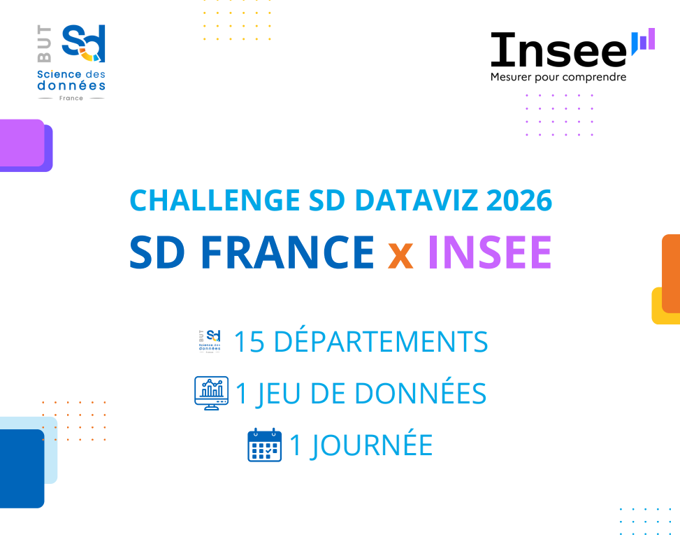
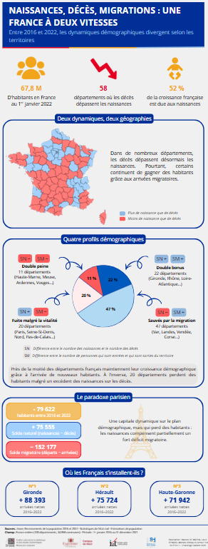
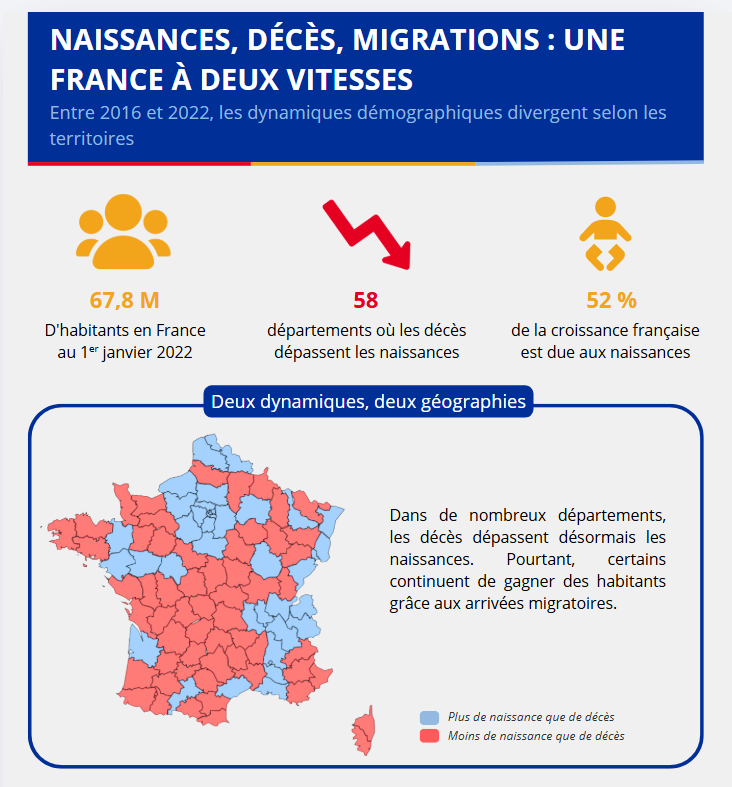
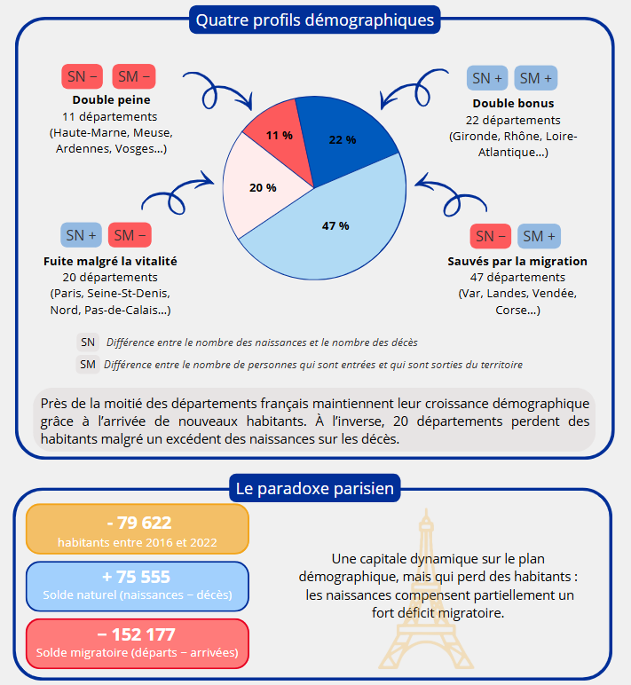
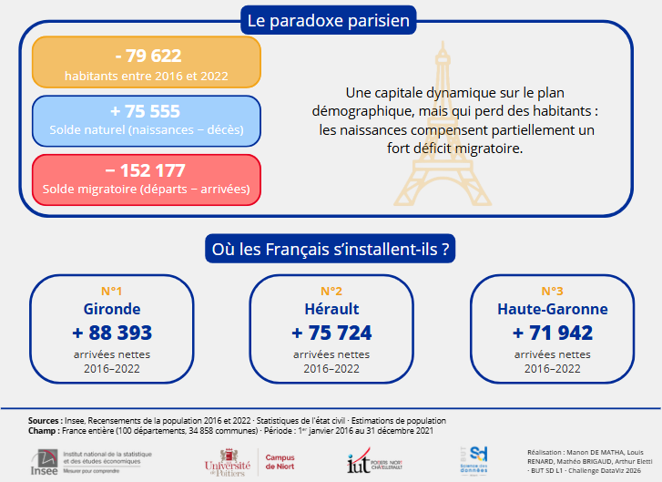

📊 Concours Dataviz
Concours organisé avec l'INSEE dans tous les BUT SD. Une journée pour créer une infographie à partir des données de recensement 2022, en comparaison avec 2016.
Chaque année, les BUT Sciences des Données de France (15 sites) participent à un challenge en partenariat avec l'INSEE. Un professionnel de l'INSEE se rend dans chaque site le jour du concours pour présenter les données sur lesquelles nous allons travailler. L'objectif : en une journée, créer une infographie à partir de ces données afin de les vulgariser auprès du grand public. Ce concours se fait par groupes de 4 à 5.
Les données de cette année portaient sur l'évolution de la population entre 2016 et 2022 ainsi que sur l'impact du solde naturel et migratoire sur cette évolution. Notre groupe était composé de 4 membres. Nous avons choisi de problématiser le sujet ainsi : « NAISSANCES, DÉCÈS, MIGRATIONS : UNE FRANCE À DEUX VITESSES ». Notre objectif était de catégoriser les régions de France selon leur solde migratoire et leur solde naturel, afin d'étudier le phénomène. En effet, certaines régions enregistrent plus de décès que de naissances, mais gagnent tout de même des habitants grâce au solde migratoire.
Avant de concourir entre les différents sites, chaque site devait sélectionner sa meilleure infographie. Notre groupe a terminé 2ème sur notre site. Félicitations à nos camarades de Niort, qui ont remporté la 1ère place ex æquo au niveau national !
La principale difficulté a été de comprendre les données et de déterminer quelles informations nous souhaitions vulgariser. De plus, la cartographie sur Power BI s'est révélée relativement difficile, car nous venions tout juste de découvrir l'outil.





- Capacité à vulgariser des données.
- Travail d'équipe.
- Habileté à comprendre et analyser des données démographiques.
- Création d'une charte graphique pertinente.
- Création d'un support de communication sur mesure et professionnel.
- Respect du temps imparti.
Identifier l'importance de contextualiser ses données.
Parmi les apprentissages critiques (éléments à maîtriser dans la formation, à dimension très académique), je pense que ce projet correspond le mieux à celui cité ci-dessus. L'objectif étant de vulgariser des données de l'INSEE, il était primordial de ne pas perdre de vue le contexte de ces données, que ce soit leur source, leur objectif ou leur destinataire, afin de pouvoir accomplir la mission.